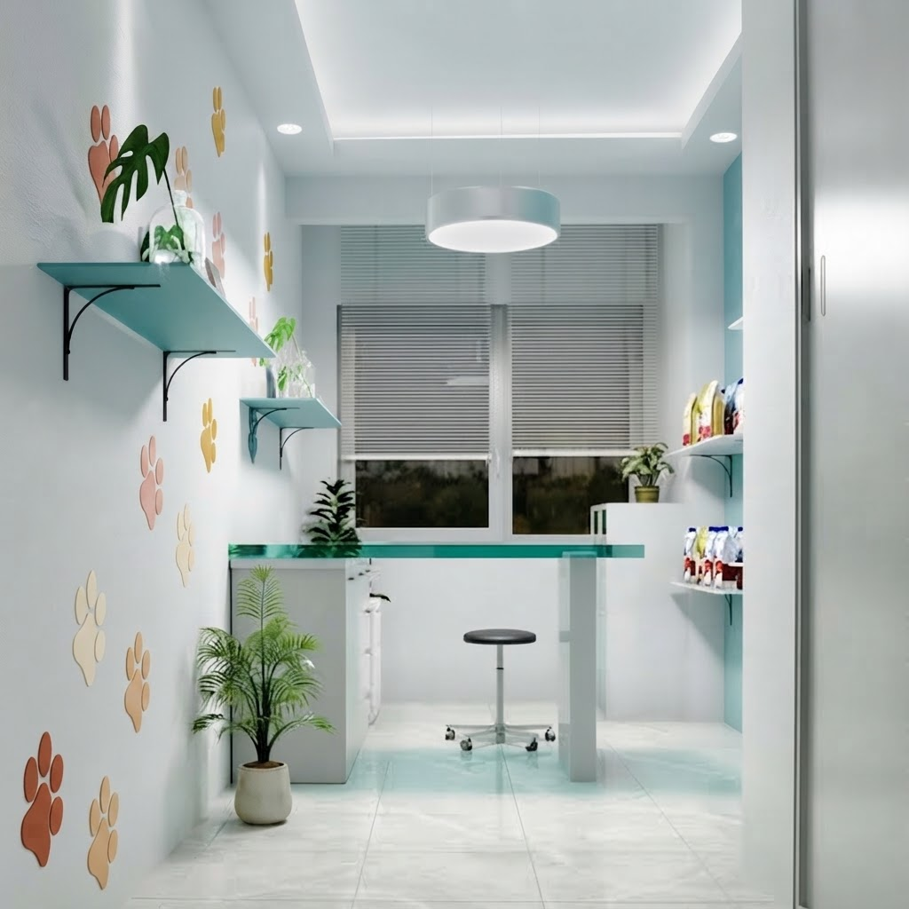

Por qué elegirnos
Nuestra historia y compromiso

"Fundada en el corazón de Paraná, Veterinaria La Mary nació del sueño compartido de brindar un espacio donde la salud y el bienestar animal fueran tratados con absoluta dedicación y respeto. Desde nuestros inicios, nos hemos consolidado como un punto de referencia para las familias de la zona, creciendo a la par de nuestra comunidad y adaptándonos tecnológicamente para ofrecer diagnósticos precisos. Cada miembro de nuestro equipo de profesionales comparte una misma vocación: cuidar de tus compañeros de cuatro patas como si fueran propios, acompañándolos en cada etapa de su vida con el profesionalismo y el cariño que se merecen."

"Nuestro consultorio principal está equipado para ofrecer un espacio seguro, limpio y tranquilo donde cada paciente se siente a gusto desde el primer momento. Aquí es donde comienza el camino hacia su recuperación, combinando tecnología de diagnóstico confiable con la calidez humana que nos caracteriza."
Urgencias
Cobertura activa las 24 horas, todos los días de la semana.
El equipo
Seis profesionales matriculados dedicados al cuidado animal.
Diagnóstico ágil
Laboratorio de análisis propio en el mismo local.
Todo en un solo lugar
Farmacia, veterinaria y alimentos balanceados.